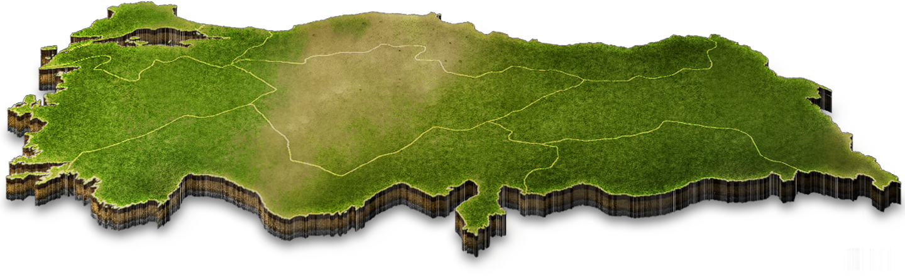
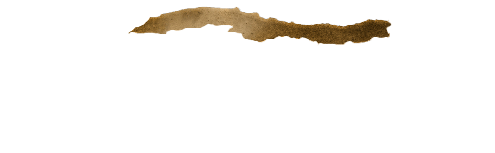
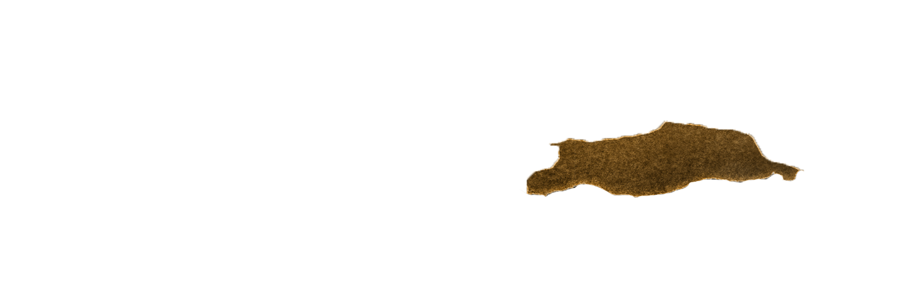
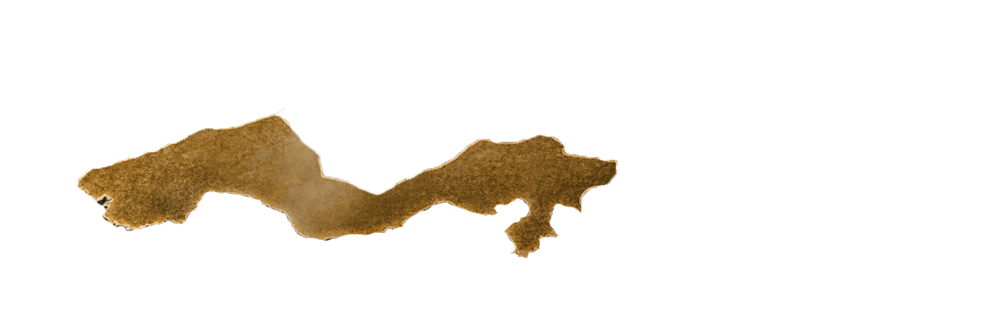

Bir bölge seçiniz
Türkçe
English
Deutsch
Bosanski
Español
Your browser does not support the video tag.
Your browser does not support the video tag.
Your browser does not support the video tag.
Your browser does not support the audio element.
Your browser does not support the audio element.
Your browser does not support the audio element.
Ana Sayfa
Ekibimiz
  
